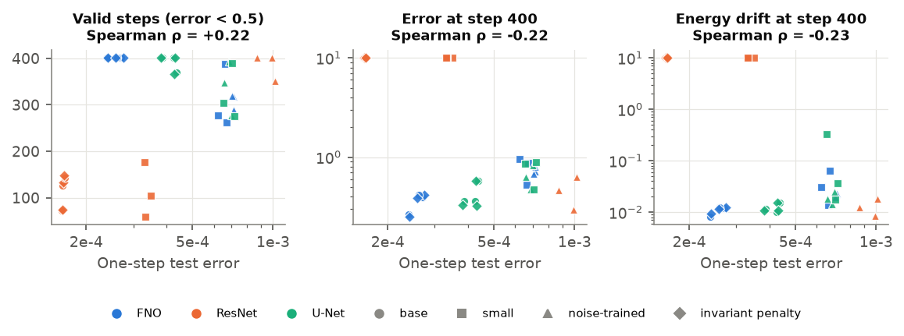
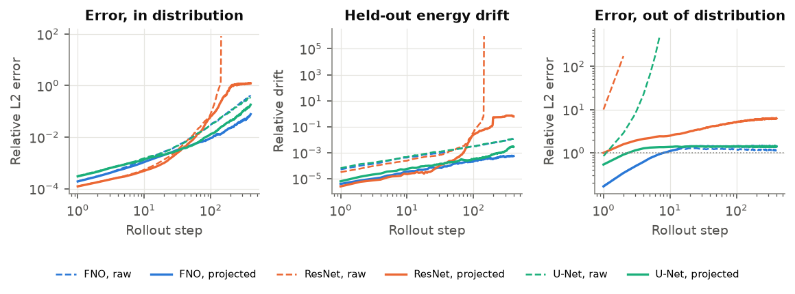
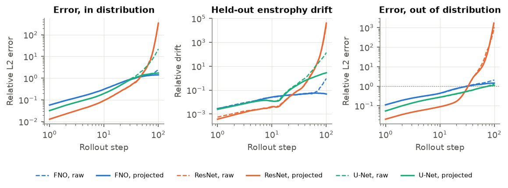
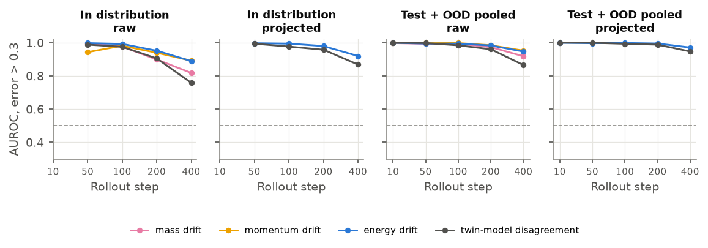
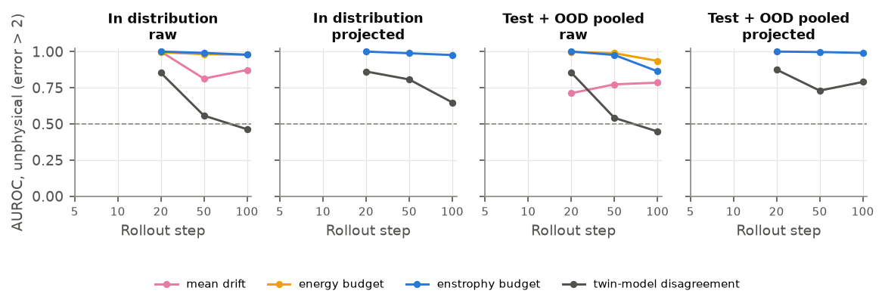

Noether Check
Neural surrogates for physics are graded on one-step error. Over long rollouts that grade says little: the models quietly break conservation laws, and that is where they fail. Restoring the laws at every step fixes much of the damage, and the laws the model still breaks give a free warning that a rollout has gone wrong.
Rollout lab
Precomputed rollouts from the trained models (seed 0, base size). Each model is rolled out on its own predictions, either raw or with a Noether projection: after every step, the smallest change to the state that restores the conserved quantities. Drag the time slider or press play.
Error against the reference solver
Held-out invariant drift (not projected)
How it works
Simulate
Pseudo-spectral solvers on the GPU give reference data for two systems: KdV solitons (1D) and decaying 2D Navier–Stokes turbulence. Each conserves known quantities, or loses them at a known rate.
Train a zoo
64 surrogates (36 for KdV, 28 for turbulence): FNO, ResNet and U-Net, at two sizes, plus input-noise and soft-penalty variants, one to three seeds each. All are trained only to predict one step ahead.
Project
At each rollout step, a Gauss–Newton step finds the minimum-norm correction that restores mass and momentum (KdV) or the mean and the exact energy budget (turbulence). No retraining.
Monitor
A quantity that is not projected (KdV energy, the turbulence enstrophy budget) should still hold. Its drift, measured without the reference, flags failing rollouts.
Results




